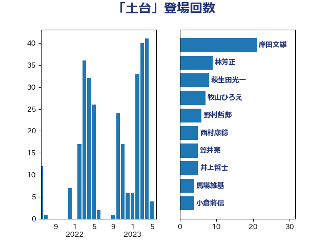

単語「土台」

| 岸田文雄 | 自由民主党 | 21 回 |
| 林芳正 | 自由民主党 | 9 回 |
| 萩生田光一 | 自由民主党 | 8 回 |
| 牧山ひろえ | 立憲民主党 | 7 回 |
| 野村哲郎 | 自由民主党 | 6 回 |
| 西村康稔 | 自由民主党 | 5 回 |
| 笠井亮 | 日本共産党 | 5 回 |
| 井上哲士 | 日本共産党 | 5 回 |
| 馬場雄基 | 立憲民主党 | 4 回 |
| 小倉將信 | 自由民主党 | 4 回 |
| 宮本徹 | 日本共産党 | 4 回 |
| 國重徹 | 公明党 | 4 回 |
| 倉林明子 | 日本共産党 | 4 回 |
| 高橋千鶴子 | 日本共産党 | 3 回 |
| 青山繁晴 | 自由民主党 | 3 回 |
| 長友慎治 | 国民民主党 | 3 回 |
| 鈴木俊一 | 自由民主党 | 3 回 |
| 谷合正明 | 公明党 | 3 回 |
| 櫛渕万里 | れいわ新選組 | 3 回 |
| 松野博一 | 自由民主党 | 3 回 |
| 松本剛明 | 自由民主党 | 3 回 |
| 山岸一生 | 立憲民主党 | 3 回 |
| 太栄志 | 立憲民主党 | 3 回 |
| 齋藤健 | 自由民主党 | 2 回 |
| 長谷川淳二 | 自由民主党 | 2 回 |
| 金子道仁 | 日本維新の会 | 2 回 |
| 舩後靖彦 | れいわ新選組 | 2 回 |
| 穀田恵二 | 日本共産党 | 2 回 |
| 田村智子 | 日本共産党 | 2 回 |
| 清水貴之 | 日本維新の会 | 2 回 |
| 沢田良 | 日本維新の会 | 2 回 |
| 梶山弘志 | 自由民主党 | 2 回 |
| 新藤義孝 | 自由民主党 | 2 回 |
| 岩渕友 | 日本共産党 | 2 回 |
| 山本香苗 | 公明党 | 2 回 |
| 山本順三 | 自由民主党 | 2 回 |
| 大塚耕平 | 国民民主党 | 2 回 |
| 塩川鉄也 | 日本共産党 | 2 回 |
| 古川禎久 | 自由民主党 | 2 回 |
| 北神圭朗 | 無所属 | 2 回 |
| 務台俊介 | 自由民主党 | 2 回 |
| 伊東信久 | 日本維新の会 | 2 回 |
| 井坂信彦 | 立憲民主党 | 2 回 |
| 中島克仁 | 立憲民主党 | 2 回 |
| 鰐淵洋子 | 公明党 | 1 回 |
| 高橋光男 | 公明党 | 1 回 |
| 高木かおり | 日本維新の会 | 1 回 |
| 馬場伸幸 | 日本維新の会 | 1 回 |
| 須藤元気 | 無所属 | 1 回 |
| 音喜多駿 | 日本維新の会 | 1 回 |
| 阿部知子 | 立憲民主党 | 1 回 |
| 鎌田さゆり | 立憲民主党 | 1 回 |
| 鈴木敦 | 国民民主党 | 1 回 |
| 金村龍那 | 日本維新の会 | 1 回 |
| 野田聖子 | 自由民主党 | 1 回 |
| 進藤金日子 | 自由民主党 | 1 回 |
| 赤池誠章 | 自由民主党 | 1 回 |
| 赤嶺政賢 | 日本共産党 | 1 回 |
| 谷田川元 | 立憲民主党 | 1 回 |
| 角田秀穂 | 公明党 | 1 回 |
| 西銘恒三郎 | 自由民主党 | 1 回 |
| 西村智奈美 | 立憲民主党 | 1 回 |
| 緑川貴士 | 立憲民主党 | 1 回 |
| 細田健一 | 自由民主党 | 1 回 |
| 篠原豪 | 立憲民主党 | 1 回 |
| 穂坂泰 | 自由民主党 | 1 回 |
| 福島伸享 | 無所属 | 1 回 |
| 石垣のりこ | 立憲民主党 | 1 回 |
| 石井苗子 | 日本維新の会 | 1 回 |
| 田名部匡代 | 立憲民主党 | 1 回 |
| 源馬謙太郎 | 立憲民主党 | 1 回 |
| 湯原俊二 | 立憲民主党 | 1 回 |
| 浜田聡 | NHK党 | 1 回 |
| 浅野哲 | 国民民主党 | 1 回 |
| 津島淳 | 自由民主党 | 1 回 |
| 泉健太 | 立憲民主党 | 1 回 |
| 永岡桂子 | 自由民主党 | 1 回 |
| 橘慶一郎 | 自由民主党 | 1 回 |
| 横山信一 | 公明党 | 1 回 |
| 柴田巧 | 日本維新の会 | 1 回 |
| 松木けんこう | 立憲民主党 | 1 回 |
| 杉久武 | 公明党 | 1 回 |
| 末次精一 | 立憲民主党 | 1 回 |
| 末松信介 | 自由民主党 | 1 回 |
| 斉藤鉄夫 | 公明党 | 1 回 |
| 徳永久志 | 立憲民主党 | 1 回 |
| 庄子賢一 | 公明党 | 1 回 |
| 平木大作 | 公明党 | 1 回 |
| 平山佐知子 | 無所属 | 1 回 |
| 山際大志郎 | 自由民主党 | 1 回 |
| 山口那津男 | 公明党 | 1 回 |
| 山口壯 | 自由民主党 | 1 回 |
| 小池晃 | 日本共産党 | 1 回 |
| 小林鷹之 | 自由民主党 | 1 回 |
| 宮路拓馬 | 自由民主党 | 1 回 |
| 宮崎雅夫 | 自由民主党 | 1 回 |
| 宮崎勝 | 公明党 | 1 回 |
| 安江伸夫 | 公明党 | 1 回 |
| 奥野総一郎 | 立憲民主党 | 1 回 |
| 天畠大輔 | れいわ新選組 | 1 回 |
| 大島敦 | 立憲民主党 | 1 回 |
| 大家敏志 | 自由民主党 | 1 回 |
| 堤かなめ | 立憲民主党 | 1 回 |
| 堀井巌 | 自由民主党 | 1 回 |
| 坂本祐之輔 | 立憲民主党 | 1 回 |
| 和田義明 | 自由民主党 | 1 回 |
| 吉良州司 | 無所属 | 1 回 |
| 吉田統彦 | 立憲民主党 | 1 回 |
| 吉田久美子 | 公明党 | 1 回 |
| 吉田とも代 | 日本維新の会 | 1 回 |
| 吉川元 | 立憲民主党 | 1 回 |
| 吉川ゆうみ | 自由民主党 | 1 回 |
| 古賀之士 | 立憲民主党 | 1 回 |
| 古川元久 | 国民民主党 | 1 回 |
| 加藤勝信 | 自由民主党 | 1 回 |
| 保岡宏武 | 自由民主党 | 1 回 |
| 佐藤公治 | 立憲民主党 | 1 回 |
| 伊藤孝恵 | 国民民主党 | 1 回 |
| 仁比聡平 | 日本共産党 | 1 回 |
| 中谷真一 | 自由民主党 | 1 回 |
| 中川貴元 | 自由民主党 | 1 回 |
| 中川正春 | 立憲民主党 | 1 回 |
| 三浦信祐 | 公明党 | 1 回 |
| 三木圭恵 | 日本維新の会 | 1 回 |